Extracting a hidden SSH private key from obfuscated archives to gain initial shell access and pivot to an internal SMB service.
In this assessment, the target credential was secured through "security by obscurity" in a heavily nested archive traversing several diverse compression formats (zip, tar, gzip, bzip2, and xz). I conducted a forensic analysis using file signatures to recursively unpack the archive until recovering an unprotected SSH private key (id_rsa) for the pippin account. Using this key, I bypassed password authentication over SSH to gain an initial foothold. Through local enumeration, I discovered a CSV file containing an SMB username and password which permitted access to an internal network share holding the target flag.
The engagement started with a seemingly harmless file named SaveForPippin.zip. Decompressing this yielded an ambiguously named binary PippinFile1. To determine the file type without an extension, I relied on UNIX magic numbers via the file command.
user@host:~$ unzip SaveForPippin.zip Archive: SaveForPippin.zip inflating: PippinFile1 user@host:~$ file PippinFile1 PippinFile1: bzip2 compressed data, block size = 900k
I renamed the file adding a .bz2 extension and utilized the bzip2 -d command. This produced PippinFile2, which upon subsequent file inspection proved to be a gzip compressed tarball (.tar.gz). I extracted this recursively, moving down through further obscuration layers including xz compression.
user@host:~$ tar -xvf PippinFile3.tar.xz .ssh/ .ssh/id_rsa
The final extraction unveiled a standard `.ssh` directory containing an unencrypted RSA private key (`id_rsa`). This key lacked a passphrase, making it immediately viable for use.
I adjusted the permissions of the id_rsa key to 600 (read-write by owner only) to satisfy SSH's strict security checks, and successfully authenticated to the target machine as the `pippin` user without requiring a password.
user@host:~$ chmod 600 id_rsa user@host:~$ ssh -i id_rsa pippin@lab-target Welcome to Ubuntu 22.04 LTS (GNU/Linux 5.15.0) pippin@lab-target:~$
Post-exploitation enumeration within the `pippin` home directory revealed a hidden file `creds.csv`. Inside, the file contained a cleartext username and password intended for the local Server Message Block (SMB) file share.
Using the harvested credentials, I authenticated locally against the SMB server running on 127.0.0.1 to download the target flag.
pippin@lab-target:~$ smbclient //127.0.0.1/PippinsShare -U pippin%[Redacted_Password] smb: \> get PippinsFlag.txt getting file \PippinsFlag.txt of size 34 as PippinsFlag.txt (16.6 KiloBytes/sec) pippin@lab-target:~$ cat PippinsFlag.txt pippinfl4g{ssh_k3ys_v1a_4rch1v3s}
This attack vector underscores why "security by obscurity" - such as nesting archives - is fundamentally flawed. An automated forensic script could unpack deep nesting layers in seconds. To genuinely secure this system:
ssh-keygen -p). If the id_rsa file was passphrase protected, gaining the file alone would not guarantee authentication.sshd_config) enforce key validation against IP allowlists or leverage hardware-backed authentication (FIDO2 / YubiKeys).The following are the raw screenshots captured during the original execution of this lab on the target VM network.
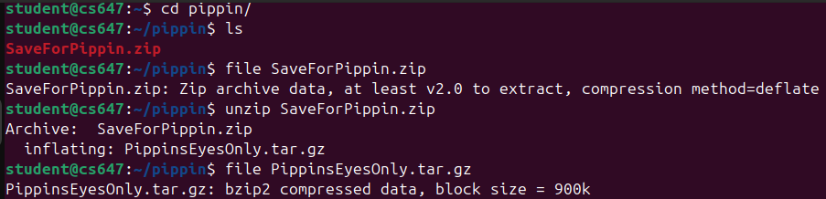
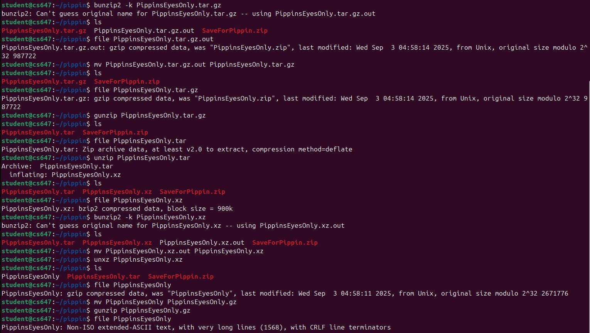
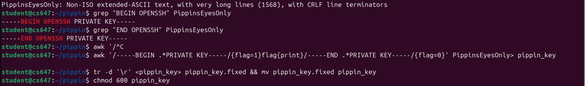
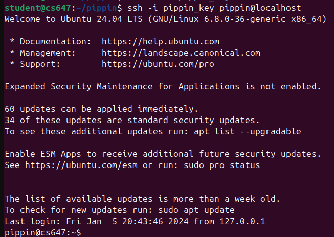
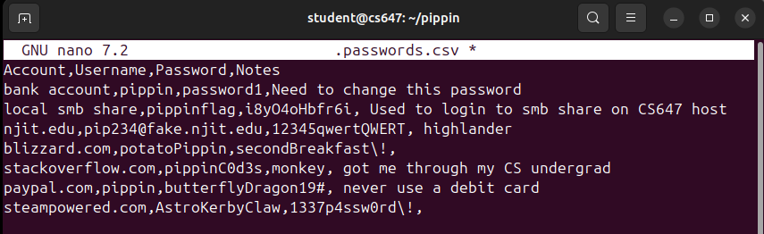
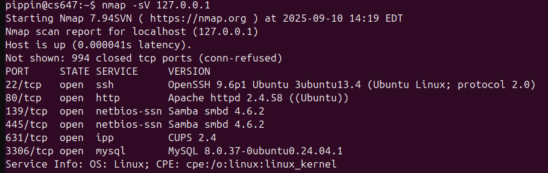
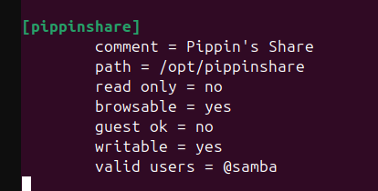
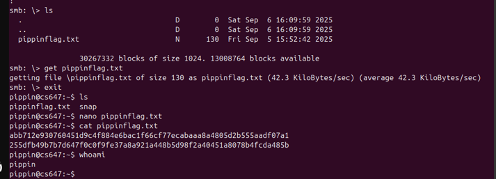
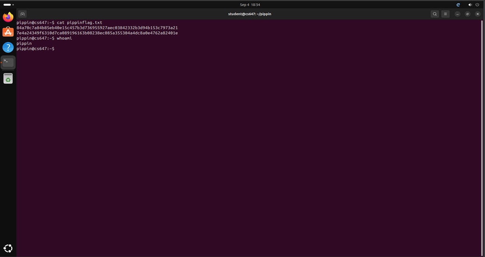
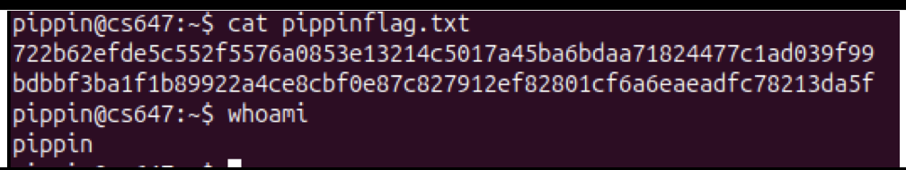
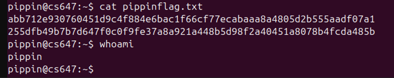